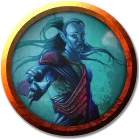

Океанус
Oceanus
Средний Гуманоид (Эльф), нейтрально-добрый, именной НИП

Класс Доспеха 12 (кожаный доспех)
Хиты 30 (4к8 + 12)
Скорость 30 футов, плавая 30 футов
| мод | спас | ||
|---|---|---|---|
| СИЛ | 15 | +2 | +2 |
| ЛОВ | 12 | +1 | +1 |
| ТЕЛ | 16 | +3 | +5 |
| мод | спас | ||
|---|---|---|---|
| ИНТ | 11 | +0 | +0 |
| МДР | 12 | +1 | +1 |
| ХАР | 10 | +0 | +0 |
Навыки Атлетика +4, Восприятие +3
Чувства тёмное зрение 60 футов, пассивное Восприятие 13
Языки Акван, Эльфийский
Опасность 1/2 (100 опыта)
Бонус мастерства +2
Особенности
Амфибия. Океан может дышать на воздухе и под водой.
Друг моря. Используя простые жесты и звуки, Океан может наладить контакт с любым существом, которое имеет врождённую скорость плавания.
Действия
Трезубец. Рукопашная или дальнобойная атака оружием: +4 к попаданию, дальность 5 футов или дистанция 20/60 футов, одна цель. Попадание: 5 (1к6 + 2) колющего урона или 6 (1к8 + 2) колющего урона, если используется двумя рукам для рукопашной атаки.
Легкий арбалет. . Дальнобойная атака оружием: +3 к попаданию, дистанция 80/320 футов, одна цель. Попадание: 5 (1к8 + 1) колющего урона.
Описание
Прежде чем попасть в плен, этому морскому эльфу было поручено расследовать передвижения Морского Призрака в "Зловещей Тайне Солтмарша". Океанус - умный и находчивый эльф, который более чем готов присоединиться к искателям приключений, у которых храбрые сердца и добрые намерения.